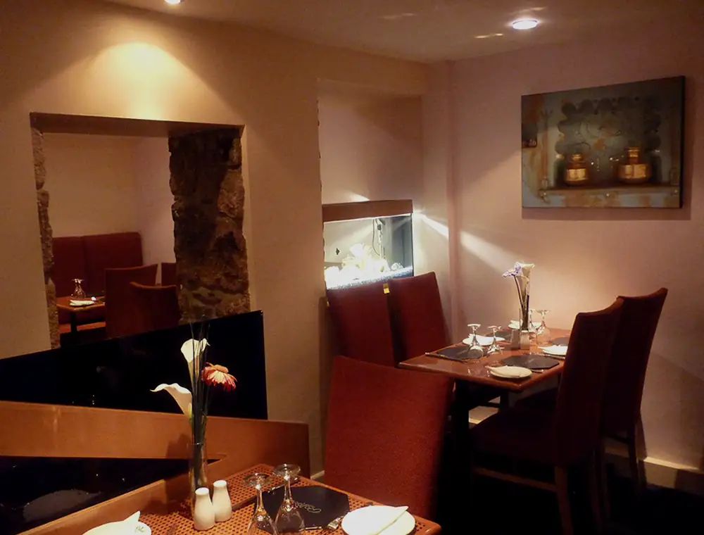

three decades in St Ives
Established in 1994
Generations
at the table.
Indian and Bangladeshi recipes, spices prepared with care and a restaurant shaped around returning families and holiday diners.
5 minfrom rail & bus2 minto parkingLargegroups welcome
Group enquiry